Planche XVIII.
Figures
125, 126, 127, 128, 129, 130, 131, 132, 133, 134, 135, 136, 137, 138, 139, 140, 141, 142, 143, 144, 145.
Planche : précédente - suivante.
|
Fig. 143 195. 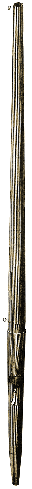 |
Fig. 140 192. 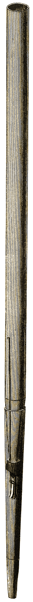 |
Fig. 142 194, 284. 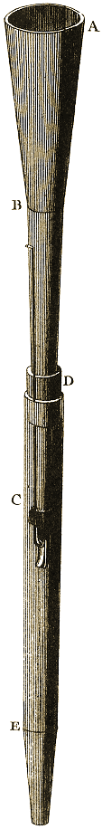 |
Fig. 134 186, 1006. 
|
Fig. 137 190, 270, 967, 972. 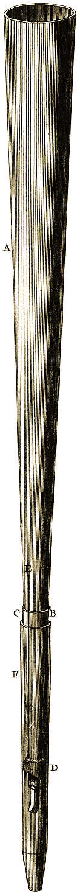 |
Fig. 133 186, 1006. 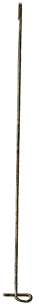 |
Fig. 136 189, 270, 967. 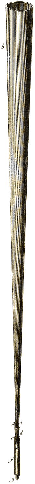 |
|
Fig. 145 196. 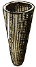 |
Fig. 138 190, 270, 967, 972. 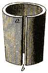 |
|||||
|
Fig. 144 196. 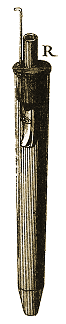 |
|
Fig. 125 183, 186. 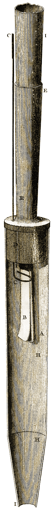 |
|||||||||||||||||||||||||
|
Fig. 139 191, 270, 967. 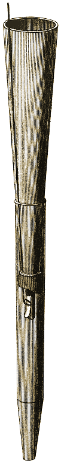 |
Fig. 141 193, 286. 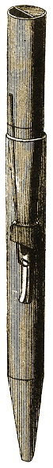 |
Fig. 126 183, 974. 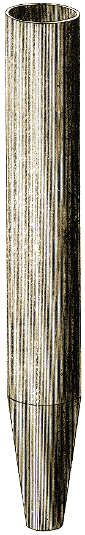 |
||||||||||||||||||||||||
Planche : précédente - suivante.